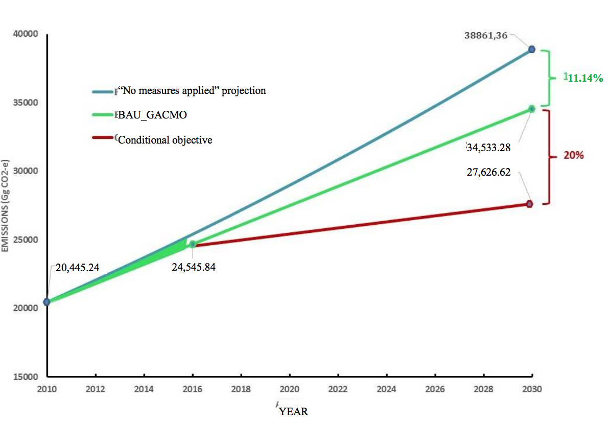
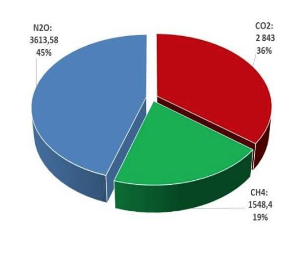
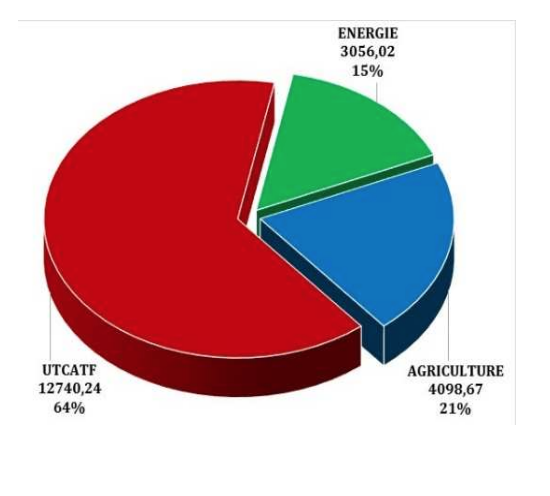
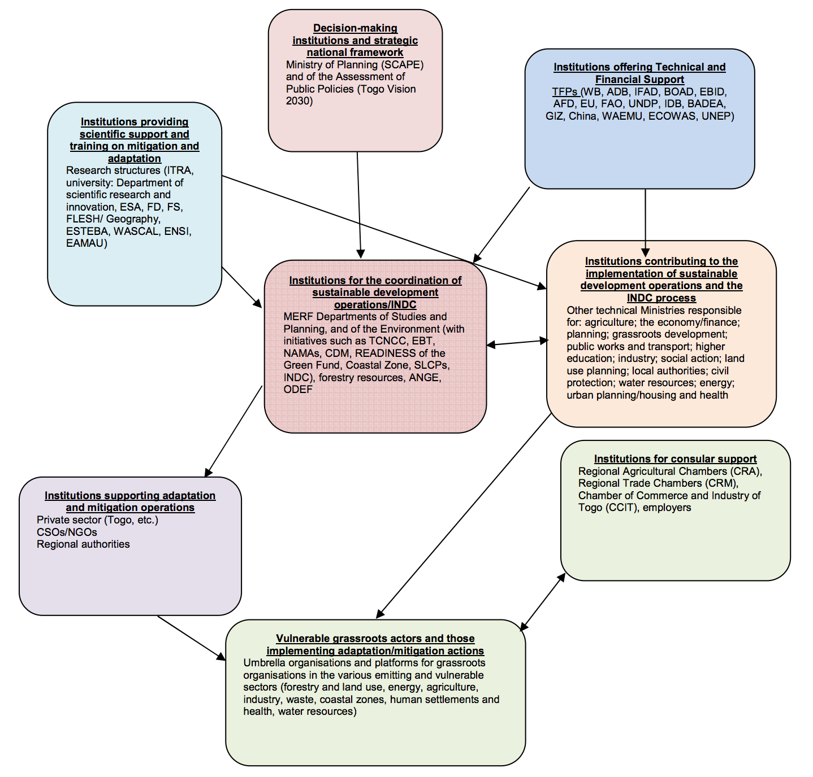

September, 2015
| Level of commitment | Reduction of GHG emissions compared to a scenario of uncontrolled development. |
| Scope | Entire country. |
| Baseline year | 2010 |
| Period of commitment | 2020-2030. However, efforts to set up the institutional mechanism, prepare the programmes and mobilize the resources will be beginning in 2016. |
| Type of contribution | Unconditional and conditional. |
| Sectors covered | Energy; agriculture; land use, land-use change and forestry; human settlements (buildings and cities) and health; coastal erosion. |
| Gases concerned | CO2; CH4; N2O. |
| Unconditional reduction target | 11.14% |
| Conditional reduction target | 31.14% |
| Funding needs | US$3.54 billion (Adaptation = 1.54; Mitigation = 1.10; Tech transfers = 0.5; Capacity-building = 0.4). |
| Planning process | Set-up of an MRV system (to be developed) - Periodic reviews of INDC implementation and updates. |
| Regional political vision | To influence and participate in establishing carbon-lean, climate-compatible development at the sub-regional and regional levels. |
Togo has historically emitted little in the way of greenhouse gases and so has only had a very small part to play in the current climate crisis. However, it must already contend with the harmful consequences of climate change. Although it is one of the least developed countries and has high needs in terms of development and adaptation, Togo nonetheless wants to contribute to international efforts to limit the temperature rise to 2°C by implementing mitigation measures. Togo’s commitment is fair, equitable and ambitious, while still taking the nation’s reality into account. Over and above its national commitments, responding to current and future adaptation needs and embarking on a carbon-lean development path will require transparent, long term international cooperation and financial support.
Togo is aware of the need to increase its means of action and so is committed to promoting a regional development vision for the concerned populations, in a spirit of solidarity, while also participating in the international fight against climate change.
The INDC was prepared under the aegis of the Ministry of the Environment and Forest Resources (MERF), in a participatory, inclusive process that included the effective involvement of every stakeholder.
A West African country, Togo is located between 6° and 11° North latitude and between 0° and 1°40 East longitude, with a total area of 56,600 km². Average rainfall varies between 800 and 1,400 mm, with an average temperature of 27°C to 28°C. The country has 50 km of maritime coastline subject to erosion. Its arable land is estimated at close to 3.4 million hectares (64% of the country), just 55% of which were cultivated in 2010. Total irrigable land covers approximately 86,000 hectares, and the country’s exploitable shallows span 175,000 hectares. Surface and groundwater are estimated at between 17 and 21 billion cubic metres of water each year, for annual consumption of some 3.4 billion m3. Plant formations have been significantly degraded and the rate of deforestation stands at around 15,000 ha/year, compared with a pace of reforestation that barely exceeds 3,000 ha annually.
Togo’s 2010 population was 6,191,155 (4th Census, 2010), with an average annual growth rate of 2.84%. On that basis, the country can expect to reach 7,121,673 inhabitants in 2015, 60% of whom under the age of 25. As a result, Togo will need to meet the challenge of providing decent jobs to that population, once it hits the labour market. Gross domestic product (GDP) rose from FCFA 1,581.3 billion in 2010 (baseline year) to FCFA 2,076.6 billion in 2015, or a per capita GDP of FCFA 255,419 and FCFA 291,583 respectively. Despite the progress made (0.459 in 2012 (2013 HDI Report), or a 0.007 improvement over 2010), Togo’s Human Development Index (HDI) remains low (ranked 159th out of the 187 countries evaluated). Poverty is still very high in Togo, affecting 58.7% of the population in 2011 (SCAPE, August 2013), compared with 61.7% in 2006. The household lighting penetration rate stands at 23%, according to the National Energy Efficiency Action Plan (NEEAP, July 2015). The 2011 QUIBB well-being indicator questionnaire showed that the main social indicators had generally improved, although their levels are still worrying: net primary schooling rate (87.8%), adult literacy rate (60.3%, with a clear disparity between the sexes: 74.0% for men and 47.9% for women), morbidity rate (20.6%), rate of access to drinking water (56.1%), proportion of households with sanitation (53.1%), rate of malnutrition (27.9%), rate of households having difficulty meeting their dietary needs (49.5%), rate of use of health services (66.2%) and unemployment rate (24.3%).
The national strategic orientations underlying sectoral programmes and policies can be found in the document Togo Vision 2030, currently under production, and in the Strategy for Accelerated Growth and Employment Promotion (SCAPE) 2013-2017. Togo’s SCAPE defines a development framework for the medium term in order to fulfil its General Policy Declaration (DPG) based on the Millennium Development Goals (MDGs) covering the 2006-2015 period and to transform Togo into an emerging country within the next 15 to 20 years. The sectoral policies and strategies in effect for vulnerable economic sectors and those emitting GHGs are recorded in Annex II, Table 1.
For several years now, Togo has been engaged in a proactive strategy for sustainable development and against global warming. Its efforts focus mainly on: bad production practices in the economic sectors; lack of population control; and the high poverty rate, which is exacerbated by the negative impacts of climate change, further reinforcing the vulnerability of the production sectors and the pressure on natural resources. This political will can be seen, amongst others, in the National Environmental Action Plan (NEAP), the National Environmental Management Programme (NEMP), the National Sustainable Development Strategy (December 2011), the National Environmental Management Capacity-building Strategy (October 2008), the National Programme for Reducing Greenhouse Gas Emissions from Deforestation and Forest Degradation (REDD+) 2010-2050, the National Strategy for Reducing the Risk of Catastrophes in Togo (December 2009), the National Medium Term Priority Framework (NMTPF) for Togo (2010-2015), and the National Action Plan for Marine and Coastal Environmental Resources Management. Further, Togo’s membership in the Climate & Clean Air Coalition (CCAC) means it could raise funds to finance its short term GHG and climate pollutant mitigation actions.
The fight against climate change and the implementation of sustainable development are part of the following key institutional initiatives: (i) existence of a ministry specifically dedicated to managing environmental and natural resources policies since 1987; (ii) creation of an Environmental Directorate at the Ministry of the Environment and Forest Resources (MERF), one of whose duties is to coordinate the mechanisms defined in the conventions that Togo has signed; (iii) creation of a National Climate Change Committee; and (iv) establishment of an institutional framework to prepare for the Third National Communication (TCN). In terms of international environmental commitments, Togo is a Party to the United Nations Framework Convention on Climate Change (UNFCCC), the Convention on Biological Diversity (CBD) and the United Nations Convention to Combat Desertification (UNCCD). The main national laws adopted in relation to climate change are: Law 2008-005 of 30 May 2008 enacting the framework law on the environment replacing the Environmental Code; Law 2008-009 of 19 June 2008 enacting the Forest Code; Decree 2006-058/PR of 5 July 2006 defining a list of works, activities and planning documents subject to environment impact assessments (EIAs) and its implementing orders; Law 99-003 of 18 February 1999 enacting the Hydrocarbons Code of the Republic of Togo.
Adaptation and development are Togo’s priorities, bearing in mind that its greenhouse gas (GHG) emissions in 2010 (baseline year) represented just 0.05% of total emissions worldwide. In consideration of the vulnerability of its economic sectors and of the social and environmental consequences of the effects of climate change, Togo has defined its national priority as the development and implementation of an adaptation strategy and options that would have an impact on the mitigation scenarios, in terms of co-benefits.
Togo intends to contribute to the fight against climate change by strengthening the resilience of its production systems and means by embarking on a carbon-lean development path. This vision is in line with international commitments and national strategic orientations relating to the need for fair, inclusive growth that responds to the challenges of sustainability, creates decent jobs, helps to reduce poverty, and protects natural resources. These key points are also included in the National Adaptation Programme of Action (NAPA) for climate change, produced in December 2008 and whose objectives relate to: (i) the protection of human lives and livelihoods, resources, infrastructure and the environment; (ii) the identification of grassroots communities’ urgent, immediate needs for adaptation to the harmful impacts of climate change and variability; and (iii) the incorporation of adaptation measures and objectives into sectoral policies and national planning.
Climate observations1 during the period running from 1961 to 2012 reveal an unmistakable rise in temperatures, as well as a decrease in rainfall and in the number of days of rain. The linear trend in the national average for temperature data between 1961 and 2012 indicates warming by 1°C. On the other hand, according to the baseline scenarios assessed for the Third National Communication (TCN), the simulations run using SimCLIM 2013 for the pessimistic scenario of RCP8.5 reveal an overall average annual temperature increase in Togo fluctuating between 0.60°C and 0.71°C higher than current levels in 2025, and between 3.6°C and 4.5°C higher in 2100, depending on the latitude being considered. For those same periods, annual precipitation would increase throughout the country by 4 to 8 mm over its current level in 2025 and by 18 to 39 mm of rain by 2100. The associated impacts on the main sectors considered to be sensitive are:
Togo is faced with major challenges in respect of adaptation, taking account of today’s climate reality and the expected effects in a more or less faraway future, as the consequences of the announced foreseeable changes. Its needs are identified below, in the form of measures: (i) reinforcing actions in favour of energy efficiency and carbon-lean technologies; (ii) promoting integrated, sustainable water resources management; (iii) strengthening the resilience of production systems and means in the agricultural sector; (iv) building the capacities of human settlements (buildings and cities) to adapt to climate change; and (v) protecting the coastal zone.
The approach selected by Togo involves the implementation of a portfolio of measures and projects in response to adaptation issues and national development priorities, bearing in mind that adaptation options that also mitigate GHG emissions will be prioritized wherever possible.
These needs are a response to national concerns expressed by all the actors. They have been quantified and approved through a consultation process and, over and above the national process instituted as part of the launch and steering of the INDC, the different actors involved also met in thematic groups on the most vulnerable sectors. This entailed a prioritization of the sectors and subsectors and the identification of the main priority measures, as well as the conditions of their implementation. For each sector, the approach was to consider the degree of impact on national development priorities such as employment, poverty reduction, increased beneficiary revenue and GDP, and the positive impact on clean, carbon-lean growth and development, while taking the climate realities of today and tomorrow into consideration. Each sectoral measure was then broken down into a series of operational activities supplemented by an economic analysis to assess the need for financial support.
An analysis of the collected data made it possible to identify the priorities, measures and funding needs (Annex IV, Table 2). The priority sectors are, by order of importance: 1st: Energy; 2nd: Agriculture; 3rd: Human settlements and health; 4th: Water resources; 5th: Coastal erosion; and 6th: Land use, land-use change and forestry.
The total funding required is estimated at approximately US$1.54 billion between 2020 and 2030.
Togo plans to adopt an approach based on contributions founded on both measures to be introduced and targeted results in order to better identify any opportunities for co-benefits in terms of reducing GHG emissions that might potentially be derived from synergies between adaptation and mitigation.
Togo’s contributions to global mitigation work can be characterized as follows:

Figure 1: INDC projections for Togo
Togo’s GHG mitigation measures in its three priority sectors (energy, agriculture, and land use, landuse change and forestry) and the associated costs (totalling US$1.1 billion) are described below.
| Calendar and/or implementation period | |
|---|---|
| Implementation calendar | Start year of the contribution: 2020. However, efforts to set up the institutional mechanism, prepare the programmes and mobilize the resources will be beginning in 2016.
End year: 2030. |
| Scope and reach | |
| Greenhouse gases covered in the contribution | Carbon dioxide (CO2), methane (CH4) and nitrous oxide (N2O). |
| Sectors/sources covered by the contribution | Energy, agriculture, and land use, land-use change and forestry. |
| Geographic areas covered by the contribution | Entire national territory. |
| Assumptions and methodological approaches | |
| Methodology for calculating emissions | The method used to count the inventory of GHGs in each sector was the one set out in the
UNFCCC’s directives and the IPCC’s guidelines for national greenhouse gas inventories: 1996 Revised, GPG 2000, GPG LULUCF 2003 and GL 2006. |
| Global warming potential | The values used to calculate the global warming potential (GWP) of the different greenhouse gases are those recommended by the UNFCCC:
CO2: 1; CH4: 21; and N2O: 310. |
| Approaches to emissions relating to land use, land-use change and forestry | The net emissions associated with land use, landuse change and forestry are all included in the contribution. |
| Net contribution from international market mechanisms | Togo is a Non-Annex 1 Party to the United Nations Framework Convention on Climate Change (UNFCCC) and is also a least developed country (LDP). In accordance with the declaration of the African Ministers in Marrakesh in April 2015, the country wants to encourage investments in mitigation projects on its own soil, thanks in particular to the Clean Development Mechanism (CDM) and the REDD+ Programme. |
Togo is a small country that emits almost no GHGs and so has virtually no responsibility in terms of global warming. Through its INDC, Togo proposes to focus its efforts on carbon-lean sustainable development, by encouraging sustainable practices, whereas the easy solution would simply be to continue using fossil fuels while they are still available.
According to the IPCC, the estimated worldwide GHG emissions for 2010 totalled roughly 40,000 Mt of CO2e. The emissions from the Republic of Togo for that same year were estimated at approximately 20.45 Mt of CO2e, representing about 0.05% of the total volume. In other words, those emissions are non-significant compared with worldwide emissions. Nonetheless, with this contribution, Togo is reaffirming its adherence to the principle of common but differentiated responsibilities and has committed to implementing ambitious measures to contribute to the goal of +2°C.
This contribution guarantees an equitable commitment.
Thanks to measures already in progress, Togo will unconditionally reduce its emissions by 11.14% compared to the baseline scenario in 2030.
Togo undertakes to back its adaptation capacity-building strategy and its development imperatives against a carbon-lean growth trajectory that will translate into a conditional reduction of its GHG emissions by 20%. This ambitious contribution will support the commitments made by the international community.
Togo’s contribution is also ambitious, because it will lead to long term transformations in the key sectors of energy, agriculture, and land use, land-use change and forestry that will decrease the future vulnerability of the concerned populations and territories.
The Ministry of the Environment and Forest Resources (MERF) intends to organize regular consultations to re-examine the implementation of the adaptation and mitigation measures set out in the INDC. This will be a recurring process, to ensure that the INDC is indeed being implemented and is updated regularly. The process put in place for this purpose will make use of existing frameworks:
The Strategy for Accelerated Growth and Employment Promotion (SCAPE) 2013-2017 takes account of climate change, namely via the actions listed in its paragraph 2.3.5.3, “Environment, sustainable natural resources management and living conditions”, for area 5. These relate to the:
It should also be noted that climate change has been targeted as one of the five risks identified for the implementation of SCAPE. However, provisions have also been introduced to account for mitigation actions on the said risks. The INDC provides a response to that concern.
All the national programmes, strategies and plans have prepared planning, monitoring and evaluation mechanisms. These different documents include the National Environmental Action Plan (NEAP) process, the National Environmental Policy, the final NEAP document, the National Environmental Management Programme, the National Sustainable Development Strategy (NSDS), the National Strategy for Reducing the Risk of Catastrophes in Togo, the National Programme for Reducing Greenhouse Gas Emissions from Deforestation and Forest Degradation (REDD+) (20102050), the National Medium Term Priority Framework (NMTPF) for Togo (2010-2015), and Adapting Agriculture in Togo to Climate Change (ADAPT).
Togo has a number of national committees: the National Climate Change Committee, the National NAPA Committee, the National NAMA Committee and the Designated National CDM Authority. All of these have monitoring and evaluation bodies that the INDC will be able to utilize.
Further, in the context of the institutionalization of its process of developing national communications, Togo will be relying on certain institutions that have quality assurance (QA) and quality control (QC) systems, and with which the Ministry of the Environment has established a partnership. This involves the following structures responsible for GHG inventories and mitigation measures in the concerned sectors:
All this will be supplemented by the development of a monitoring, reporting and verification (MRV) system that will include the adaptation and mitigation indicators defined in existing legislation, policies, strategies, programmes and plans, in order to better monitor the INDC’s implementation.
The implementation calendar is included in Annex V.
This section describes the necessary support in the form of financing, capacity-building, technology transfers and others, linked to the implementation of the INDC. The provided information covers adaptation and mitigation and could help international partners to better understand the needs in order to target their support for Togo.
All of this information is contained in the technology needs assessment documents, the national climate strategies and actions plans, the communication strategy for climate change and the transition to the green economy, capacity-building needs assessments, investment needs assessments, national communications, NAMAs, the NAPA, and the PNIERN (National Investment Programme for the Environment and Natural Resources), in addition to being summarized in the first part of this document.
Satisfaction of the identified needs will be decisive in reinforcing the effectiveness of implementation of the INDC. Real efforts have been made to build both personal and institutional capacities during the First, Second and Third National Communications. However, many needs will still have to be met before achieving the national skills and expertise that will be necessary in order to carry out climate change initiatives successively and for the long term.
In order to meet its development and adaptation challenges and to implement its roadmap, Togo must first build up its capacities. This will need to remedy the following, in particular:
Cost: US $0.4 billion.
The institutionalization process that is now under way will make it possible to train a larger number of experts and to reinforce and provide tools to research and excellence centres on climate change. Further, the national INDC committee will become a standing committee, endowed with appropriate means so that it can fulfil its role effectively. A long term coordination team will also be created to monitor and evaluate the INDC activities.
The technology transfer needs were identified and can essentially be summarized as follows:
Cost: US $0.5 billion.
To implement its INDC, Togo will need three point five four(3.54) billion US dollars, one point five four (1.54) billion of which for adaptation, one point ten (1.10) billion of which for mitigation, zero point five (0.5) billion for technology transfers and zero point four (0.4) billion for capacity-building.
These estimates represent additional financing needs over and above the cost of any national decisions that would have been implemented in any case, in view of the defined national priorities.
Togo hosts a number of regional and sub-regional institutions like BOAD, EBID and SABER, which have set up mitigation initiatives. Additionally, BOAD also houses the Regional Collaboration Centre (RCC) for the UNFCCC’s sustainable development mechanisms. The BOAD and the RCC have initiated a support process for INDCs, as channels that provide access to funding, technology and capacity building, but also to perform monitoring, reporting and verification (MRV) on the results of mitigation actions.
Togo, being aware of its geographic location, the regional and international institutions that it hosts, as well as the sub-region’s economic issues, intends to play a unique regional role, uniting, mobilizing and sharing a common vision and common action resources with its neighbouring countries. It also plans to take a leadership role in the sub-region and the region, and perhaps even across the continent, in favour of climate-compatible, carbon-lean development.
ADAPT: Project to Adapt Agriculture in Togo to Climate Change
BAU: Business-as-Usual
BOAD: West African Development Bank (known under its French acronym)
CDM: Clean Development Mechanism
CO2: Carbon dioxide
CO2e: CO2 equivalent (unit of measurement of direct GHG emissions taking account of the global warming potential of these gases)
CH4: Methane
GDP: Gross Domestic Product
GWP: Global Warming Potential
EBID: ECOWAS Bank for Investment and Development
ECOWAS: Economic Community of West African States
ENSI: National Graduate School of Engineering
ESA: Graduate School of Agricultural Engineering
INDC: Intended Nationally Determined Contribution
FCFA: Francs of the African Financial Community
GHG: Greenhouse gas
Gg: Gigagram
GPG: Good Practice Guidance
IPCC: Intergovernmental Panel on Climate Change
ISFM: Integrated Soil Fertility Management
LULUCF: Land Use, Land-Use Change and Forestry
MRV: Monitoring, Reporting and Verification
N2O: Nitrous oxide
NAMAs: Nationally Appropriate Mitigation Actions
NAPA: National Adaptation Programme of Action
NEEAP: National Energy Efficiency Action Plan
NREAP: National Renewable Energy Action Plan
REDD: Reducing Emissions from Deforestation and Forest Degradation
SCAPE: Strategy for Accelerated Growth and Employment Promotion
TCN: Third National Communication
UNFCCC: United Nations Framework Convention on Climate Change
WAEMU: West African Economic and Monetary Union
| Sector | Current policy documents and strategies | Action to be taken |
|---|---|---|
|
Energy |
Strategic plan for the electricity sub-sector, adopted in December 2010. Draft National Energy Policy (POLEN), drawn up in October 2011. Togo’s National Energy Efficiency Action Plan (NEEAP), 2015-2020-2030; July 2015. The National Renewable Energy Action Plan (NREAP) Togo, 2015-2020-2030; August 2015. |
Adoption of a national energy policy; establishment of incentives for renewable energy use; revision of the electricity law and creation of a national rural electrification agency. |
|
Transport |
Declaration of General Governmental Policy on the Restructuring of the Transport Sectorof 29 May 1996, made operational in 2013 through the definition of theNational Strategy for the Development of Transport in Togo (not yet adopted). |
Revision of current national transport policy; adoption and application of the measures within the national strategy, especially the sections limiting the age and setting standards for the quality of imported used vehicles. |
|
Land Use and Forestry |
National Forest Action Plan (PAFN) 1994, updated in November 2011. Togo’s Forest Policy (PFT), defined in November 2011. |
Preparation of structuring programmes and mobilisation of adequate funding through public/private partnerships. |
|
Agriculture |
Commitment to the Climate-Smart Agriculture process in the framework of the implementation of the agricultural policy laid out by ECOWAS and NEPAD. National Policy for the Agricultural Development of Togo (PNDAT) 2013-2022, approved at a national workshop on 22 and 23 November 2012. The existence of the National Programme for Agricultural Investment and Food Security (PNIASA). |
Initiation of specific adaptation programmes along the lines of the ADAPT project currently being implemented, as well as mitigation programmes. |
|
Water Resources |
National Policy on Drinking Water Supply and Sanitation in Rural and Semi-Urban Areas, prepared in April 2006. National Action Plan for the Water and Sanitation Sector(PANSEA). Integrated Water Resource Management(IWRM) Strategy. Water Code (law 2010/004 laying down the water code). |
Implementation of pilot programmes based on IWRM and measures to increase water resource availability, in both quantity and quality. |
|
Health and Human Services |
Existence of a National Health Policy; Preparation of a draft National Hygiene/Sanitation Policy for Togo (PNHAT), accompanied by a Strategic Plan. Existence of a National Urban Planning and Housing Policy. Preparation of a national housing strategy. |
Revision of urban planning and housing policy, including energy efficiency measures and taking into account disaster risks.
Improvement of efficiency, both in managing other policies and in the service offer for human settlements (buildings and cities), to build the resilience of populations facing the effects of climate change. |
| Gases included in the contribution | Sectors covered by the contribution |
|---|---|
|
|
|  |  |
| Figure 2: Emissions by GHG (Gg CO2O-e): Baseline year: 2010 |
Figure 3: Emissions by key sector (Gg CO2O-e) Baseline year: 2010 |
| Priority adaptation measures/projects | Cost in million USD |
|---|---|
| Energy Sector | 176 |
| Development of renewable energies (target of 4% of the energy mix): promotion of bio-fuels and reclamation of degraded land; training and seeking out technical and financial partners for the production of new and renewable energies; tax remission on imports of equipment for solar and other renewable energies | 40 |
| Sustainable management of traditional energy sources (firewood and charcoal) | 7 |
| Implementation of electricity-saving strategies | 9 |
| Development of mini hybrid networks for rural electrification | 30 |
| Promotion of low-carbon transport modes | 40 |
| Promotion of new, clean technologies in the building sector | 50 |
| Agriculture Sector | 186 |
| Promotion of efficient varieties resistant to climate change | 10 |
| Strengthening of Integrated Soil Fertility Management (ISFM) | 25 |
| Mapping out and establishing transhumance zones and corridors | 20 |
| Construction and/or improvement of reservoirs for micro-irrigation and livestock watering in rural areas throughout all regions | 50 |
| Support for the mapping of areas vulnerable to climate change | 6 |
| Support for the dissemination of good agro-ecological practices | 45 |
| Promotion of rice production systems with very low water consumption and low GHG emissions (SRI: System of Rice Intensification). | 30 |
| Human Settlements Sector: cities and buildings, including waste | 540 |
| Improved sanitation and drainage of rainwater in the main urban centres | 40 |
| Development and improvement of roads in the main urban centres | 150 |
| Promotion of urban forestry | 80 |
| Rational and sustainable management of waste in urban areas | 160 |
| Harmonious and balanced spatial development of urban centres: development and implementation of urban planning tools | 50 |
| Strengthening of the institutional and regulatory framework concerning health and the environment | 15 |
| Establishment of adapted surveillance, partnership, financing and monitoring/evaluation mechanisms | 10 |
| Protection against disaster risks | 35 |
| Water Resource Sector | 191.3 |
| Improvement of knowledge on water resources | 16 |
| Protection of water resources | 50 |
| Improvement of agricultural water management | 20 |
| Conservation of rainwater and reuse of wastewater | 35 |
| Improvement of groundwater management | 70 |
| Study of the potential of the coastal sedimentary basin, and of its resilience to climate change. | 0.3 |
| Coastal Erosion Sector | 214 |
| Improvement of the regulatory framework and of knowledge management on the phenomenon of coastal erosion | 14 |
| Making structural investments in coastal protection | 200 |
| Land Use, Land-Use Change and Forestry Sector | 236.5 |
| Mapping and orientation towards areas of human activity adapted to each environment and natural context | 16 |
| Capacity building (technical and physical) of meteorological services for good forecasting and planning of activities. | 30 |
| Reforestation and protection of zones with fragile ecosystems (mountainsides, river banks) in the fight against floods, violent winds and erosion. | 120 |
| Promotion of the Ecological Awareness (Ecologie et Conscience) Programme in the schools of Togo | 0.5 |
| Preparation of the national regional development plan and implementation of pilot operations. | 70 |
| TOTAL | 1 543.8 |
The programmes described here bear witness to Togo’s proven commitment to implement operational projects whose goal is to decrease the vulnerability of the concerned territories and their inhabitants, while working to reduce GHG emissions.

Figure 4: Mapping of the Stakeholders in Togo’s INDC Process
| 1. Products/Activities | 2016-2020 | 2021-2025 | 2026-2030 | ||||||||||||
|---|---|---|---|---|---|---|---|---|---|---|---|---|---|---|---|
| 1 | 2 | 3 | 4 | 5 | 1 | 2 | 3 | 4 | 5 | 1 | 2 | 3 | 4 | 5 | |
| 2. Establishment of the institutional, legal, and regulatory framework | |||||||||||||||
| 3. INDC launch workshop | |||||||||||||||
| 4. Communication, information, extension and awareness campaign | |||||||||||||||
| 5. Strengthening of national and sector capacities | |||||||||||||||
| 6. Establishment of an MRV system | |||||||||||||||
| 7. Workshops by sector | |||||||||||||||
| 8. Finalisation of the priority projects | |||||||||||||||
| 9. Advocacy among the privatesector | |||||||||||||||
| 10. Preparation for climate financing | |||||||||||||||
| 11. Catalysing climate financing | |||||||||||||||
| 12. INDC pilot phase | |||||||||||||||
| 13. Acquisition of adaptation and/or mitigation technology | |||||||||||||||
| 14. Implementation of the first, priority adaptation and/or mitigation projects | |||||||||||||||
| 15. Evaluation of the first INDC reductions | |||||||||||||||
| 16. Verification | |||||||||||||||
| 17. Certification | |||||||||||||||
| 18. Drafting of the implementation report | |||||||||||||||
| 19. Validation workshop | |||||||||||||||
Observations of the climate system in Togo are based on direct measurements of climate parameters performed by national meteorology services.↩